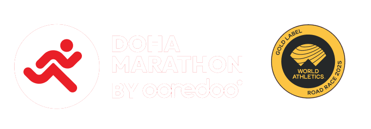

1
2
3
4
5
6
START • FINISH • START
توقيت السباق المباشر
02:04:18.42
42.195 KM
DOHA MARATHON 2027 • OFFICIAL ACCESS

لوحة تحكم السباق
نظام إدارة ومتابعة المتسابقين المباشر
اسم المستخدم
كلمة المرور
انطلاق إلى لوحة التحكم